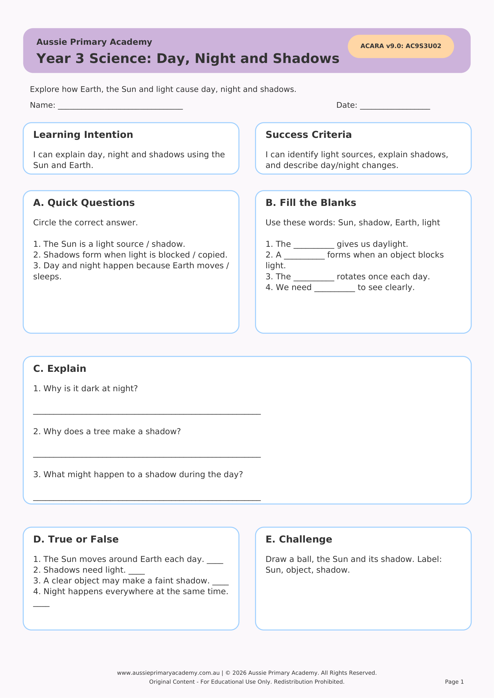

Year 3 · Science · Earth and Space · Free Printable
Day, Night and Shadows
Help Year 3 students investigate how day and night occur and how shadows change throughout the day.
Resource Details
- Year level: Year 3
- Subject: Science
- Focus: Day, Night and Shadows
- Resource type: Free printable worksheet · PDF
- Curriculum status: Supplementary Year 3 Science resource · no current AC9S3 content code assigned
- Best for: Classroom practice, homework, tutoring or homeschool learning
Worksheet Preview

Learning Intention
Students will explain how the Earth’s rotation causes day and night and describe how shadows change during the day.
Australian Curriculum
AC9S3U02
Identify sources of light and how shadows form, and describe how the position of the sun affects shadows throughout the day.
Teacher Notes
Use a torch and a globe or ball to model day and night. Outside, mark shadow positions at different times if possible.
Skills Practised
- Understanding day and night
- Observing shadow changes
- Earth’s rotation concept
- Science inquiry